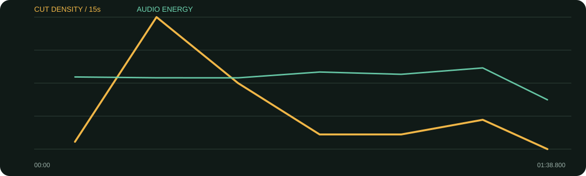

景别 / 机位系统
- 人物访谈以白色造型的中/近景为锚
- 美学B-roll使用舞台、自然、造型与档案碎片
- 访谈段较稳，蒙太奇段明显加速
- 色彩保持白、绿、柔光的统一气质
它把“山/花”从文案变成视觉结构：人物正面访谈负责观点，花、自然、舞台与造型碎片负责情绪联想。快速美学蒙太奇与较稳的回答交替，所以短片既有杂志感也能听懂。
口径说明：候选镜头由场景检测生成，闪光、人物快速动作、数字推拉和图形变化都可能误触发；逐秒重点由真实原片、字幕语义和全片总览人工选择。字幕来自本地中文语音识别，人名、品牌名与行业词可能有误，不把自动转写当逐字稿。
每张总览按时间顺序覆盖全片。它用于检查章节、B-roll密度和景别回环；详细切点以候选镜头表与下面的逐秒重点为准。
| 时间 | 章节 | 内容推进 | 剪辑任务 |
|---|---|---|---|
| 00:00–00:18 | 定义漂亮与榜样 | 随心所欲、优秀女性不局限自己。 | 先稳住人物，再准备进入意象。 |
| 00:18–00:40 | 山与花的视觉蒙太奇 | 独当一面与自由绽放可以并存。 | 快速舞台/自然/造型画面把比喻视觉化。 |
| 00:40–01:04 | 不同人生阶段 | 自由浪漫与埋头工作并不冲突。 | 回访谈降低速度，让观点被理解。 |
| 01:04–01:22 | 更坚定、更开放 | 工作坚定，生活不设限。 | 第二段美学B-roll回应人物变化。 |
| 01:22–01:39 | 随心所欲的漂亮 | 想做什么就做什么，但保持积极。 | 回脸收结论，片尾标识结束。 |
B-roll主要是意象型而非证据型：它把“山的坚定、花的自由、漂亮的随心”转为气质和动作。
综合音轨平均能量较低，访谈与蒙太奇段存在明显节奏密度差；未分离配乐，不能把视觉快切直接解释为音乐鼓点。
每张长图从左到右为真实的连续秒点。重点不是记住截图，而是看清一组画面怎样“进入—完成任务—退出”。
画面事实干净中近景建立审美基准。
怎么复现先确定主色与肤色，再寻找同调B-roll。
画面事实“榜样/花”出现时开始意象蒙太奇。
怎么复现用关键词触发画面，不要随机堆漂亮素材。
画面事实多来源画面靠人物姿态与色彩连续。
怎么复现先按色彩和动作分箱，再做1—2秒硬切。
画面事实快段后回稳，观众得到解释和呼吸。
怎么复现每段蒙太奇后必须回A-roll完成意义。
画面事实对应“更自由/开放”的语义再次提速。
怎么复现第二轮素材要有新动作或新空间，避免重复第一轮。
画面事实人物近景承担结论，装饰素材退场。
怎么复现最后价值句回脸，不用风景替人物发言。
画面事实速度下降，品牌/栏目短暂出现。
怎么复现片尾不要超过2—3秒，保持余韵。

| 观察项 | 15秒窗口 |
|---|---|
| 视觉最密 | 00:15–00:30（72.0 候选切镜/分）；00:30–00:45（36.0 候选切镜/分）；01:15–01:30（16.0 候选切镜/分） |
| 视觉最缓 | 01:30–01:38（0.0 候选切镜/分）；00:00–00:15（4.0 候选切镜/分）；00:45–01:00（8.0 候选切镜/分） |
| 综合音轨最强 | 01:15–01:30（-27.3 dBFS）；00:45–01:00（-28.7 dBFS）；01:00–01:15（-29.5 dBFS） |
“视觉最密/最缓”基于自动候选切镜；“综合音轨最强”包含人声、环境声、音乐和音效，不能单独当作配乐音量。平均综合音轨为 -30.34 dBFS，最高15秒窗口 -27.31 dBFS，最低15秒窗口 -38.18 dBFS。
| # | 入点 | 出点 | 时长 | 代表帧秒点 | 证据 |
|---|---|---|---|---|---|
| 1 | 00:00.000 | 00:06.967 | 6.97s | 0.750000s | 自动候选 |
| 2 | 00:06.967 | 00:15.533 | 8.57s | 7.716667s | 自动候选 |
| 3 | 00:15.533 | 00:17.933 | 2.40s | 16.283333s | 自动候选 |
| 4 | 00:17.933 | 00:18.367 | 0.43s | 18.128333s | 自动候选 |
| 5 | 00:18.367 | 00:18.767 | 0.40s | 18.546667s | 自动候选 |
| 6 | 00:18.767 | 00:19.033 | 0.27s | 18.886667s | 自动候选 |
| 7 | 00:19.033 | 00:20.167 | 1.13s | 19.543333s | 自动候选 |
| 8 | 00:20.167 | 00:20.467 | 0.30s | 20.301667s | 自动候选 |
| 9 | 00:20.467 | 00:20.767 | 0.30s | 20.601667s | 自动候选 |
| 10 | 00:20.767 | 00:20.933 | 0.17s | 20.841667s | 自动候选 |
| 11 | 00:20.933 | 00:21.367 | 0.43s | 21.128333s | 自动候选 |
| 12 | 00:21.367 | 00:22.567 | 1.20s | 21.906667s | 自动候选 |
| 13 | 00:22.567 | 00:23.133 | 0.57s | 22.821667s | 自动候选 |
| 14 | 00:23.133 | 00:23.367 | 0.23s | 23.238333s | 自动候选 |
| 15 | 00:23.367 | 00:23.767 | 0.40s | 23.546667s | 自动候选 |
| 16 | 00:23.767 | 00:24.033 | 0.27s | 23.886667s | 自动候选 |
| 17 | 00:24.033 | 00:25.600 | 1.57s | 24.738333s | 自动候选 |
| 18 | 00:25.600 | 00:25.767 | 0.17s | 25.675000s | 自动候选 |
| 19 | 00:25.767 | 00:26.733 | 0.97s | 26.201667s | 自动候选 |
| 20 | 00:26.733 | 00:26.933 | 0.20s | 26.823333s | 自动候选 |
| 21 | 00:26.933 | 00:32.200 | 5.27s | 27.683333s | 自动候选 |
| 22 | 00:32.200 | 00:32.533 | 0.33s | 32.350000s | 自动候选 |
| 23 | 00:32.533 | 00:33.400 | 0.87s | 32.923333s | 自动候选 |
| 24 | 00:33.400 | 00:33.833 | 0.43s | 33.595000s | 自动候选 |
| 25 | 00:33.833 | 00:34.233 | 0.40s | 34.013333s | 自动候选 |
| 26 | 00:34.233 | 00:34.433 | 0.20s | 34.323333s | 自动候选 |
| 27 | 00:34.433 | 00:36.400 | 1.97s | 35.183333s | 自动候选 |
| 28 | 00:36.400 | 00:37.167 | 0.77s | 36.745000s | 自动候选 |
| 29 | 00:37.167 | 00:37.533 | 0.37s | 37.331667s | 自动候选 |
| 30 | 00:37.533 | 00:39.900 | 2.37s | 38.283333s | 自动候选 |
| 31 | 00:39.900 | 00:45.267 | 5.37s | 40.650000s | 自动候选 |
| 32 | 00:45.267 | 00:49.467 | 4.20s | 46.016667s | 自动候选 |
| 33 | 00:49.467 | 00:57.633 | 8.17s | 50.216667s | 自动候选 |
| 34 | 00:57.633 | 01:02.833 | 5.20s | 58.383333s | 自动候选 |
| 35 | 01:02.833 | 01:10.767 | 7.93s | 63.583333s | 自动候选 |
| 36 | 01:10.767 | 01:12.267 | 1.50s | 71.441667s | 自动候选 |
| 37 | 01:12.267 | 01:17.233 | 4.97s | 73.016667s | 自动候选 |
| 38 | 01:17.233 | 01:21.400 | 4.17s | 77.983333s | 自动候选 |
| 39 | 01:21.400 | 01:22.767 | 1.37s | 82.015000s | 自动候选 |
| 40 | 01:22.767 | 01:24.800 | 2.03s | 83.516667s | 自动候选 |
| 41 | 01:24.800 | 01:27.533 | 2.73s | 85.550000s | 自动候选 |
| 42 | 01:27.533 | 01:36.133 | 8.60s | 88.283333s | 自动候选 |
| 43 | 01:36.133 | 01:38.800 | 2.67s | 96.883333s | 自动候选 |